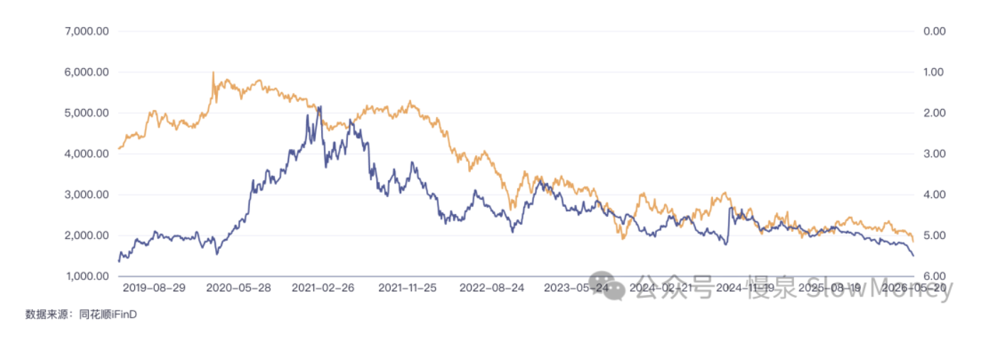

宏观讨论20260520-美债与中国消费股
2026-05-20 · 美债与中国消费股 · 宏观讨论（补档）
这张图里的两个指标：一个在国内非常关注、被痛骂；一个在美国和全世界被关注。可能很难放在一起看的指标，竟然走势如此接近——特别是 2022 年之后，呈现更强的相关性。

他们其中一个是五粮液的股价，另一个是美国 30 年国债利率。
他们怎么搞到一起了？
一个利率一直上，一个股价一直下；一个一直下不来，冲高到历年高位；一个一直上不去，跌至历年低位。他们还有个更大的共同点——在各国内部，都是科技股的最大的陪衬：
- 美债利率如果下来，科技股更好——TACO 永远利好英伟达。
- 国内消费如果改善，科技股更好——科技泡沫化再泡沫化。
谁能来解释一下？
谁能来解释一下？
外需好，内需差。疫情后的海外再工业化和经济增长需要国内产品，形成了一种诡异的外需强、内需弱。国内经济差消费弱，海外经济好利率高。
政策加剧了这种相关性。海外经济改善驱动的政策推动利率维持在相对高位；国内在应对内需疲弱方面动用手段的动力和能力都偏弱，甚至对地产一直限制，导致资产收缩、居民资产负债表衰退。而内需趋弱的背景下，国内货币收紧的概率为零——央行成了历年最隐身的央行，不知道自己陷入流动性陷阱，希望推动根本没有的信贷需求。结果就是：国内消费、利率都在历史低位。
AI 救了全世界。AI 让海外高利率下的增长成为现实，也让国内低需求的增长成为现实。双赢、大赢！
未来会发生什么让他们俩分开？
人家为什么要分开？你 sei 啊？
原文 / 观点：Matt · johsnon0827@gmail.com